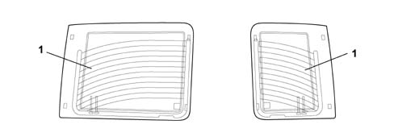
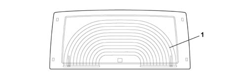
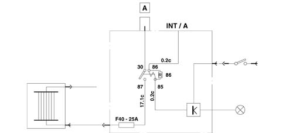

Introduction - BODYSHELL WINDOWS
- Path
- Descriptions > 70 FITTINGS > 7035 BODY WINDOW GLASSES > Introduction - BODYSHELL WINDOWS
- Kind
- system description
- Applies to
- all engines; all production periods
- Interactive page
- https://sloeber94.github.io/elrnDB-fDbl/en/#/2585427
Applies to: all engines; all production periods
HEATED REAR WINDSCREEN
Two different types of heated rear window may be fitted according to the version.

1 Heated rearwindow fitted to versions with a rear door with two asymmetrical flaps
Applies to: all engines; all production periods
HEATED REAR WINDSCREEN
-

1 Heated rear window fitted to versions with a swinging rear door.
Applies to: all engines; all production periods
HEATED REAR WINDSCREEN
Heated rear window wiring diagram
